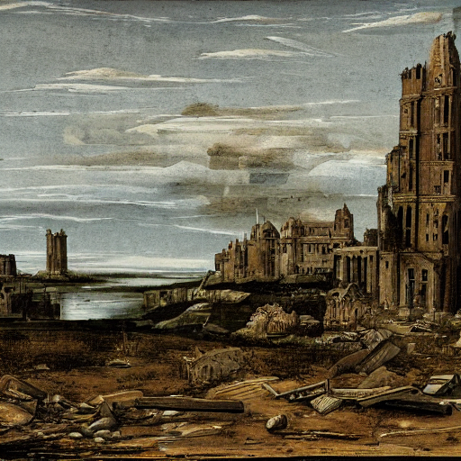

Procházíš pustou krajinou, kde vše pohltil prach a zapomnění. Na obzoru se rýsují zříceniny starého města, jehož jméno je dávno ztraceno v čase. Vítr kolem tebe nese písečné zrníčka, která ti bičují tvář, a šeptá prastaré příběhy, kterým nerozumíš. Každý krok tě táhne blíž k ruinám, i když máš pocit, že bys měl být na pozoru.